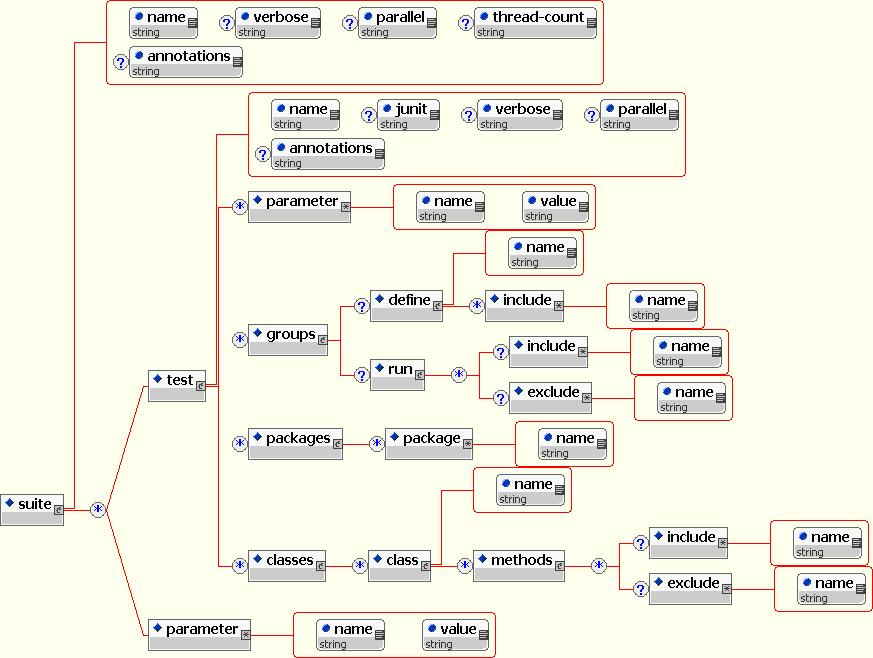

GlassFish Testing Framework
Background
Terminology
Goals
TestNG
Defining a Test
In TestNG, the basic unit of testing remains a Java method.
From a higher level of organizing a lot of tests however, the unit of testing is a test-suite that is defined in terms of an XML. The structure of a test-suite is as follows:

Thus, a test-suite comprises of various tests which themselves may comprise of groups, Java packages, Java classes. At the same time, a test-suite can contain groups that can be included or excluded. A test Java class can be configured to only include certain methods and exclude others. Thus, there is a lot of flexibility in terms of defining the test-suites.
It is important for us to understand that there is an interplay between the testng.xml that defines a test-suite and various Java test classes and methods that are being run as part of this test-suite. In other words, just by changing the attributes of elements in test-suite definition (i.e. testng.xml), the same test classes and/or methods can be run differently, without recompiling the test classes. Note that the classes must use TestNG Annotations in order to be run by TestNG TestRunner.
One should look at the definition of test-suite(s) as a way to conveniently arrange various tests to deliver a collection of tests to create either periodically run tests or quickly investigate certain problems. It imparts configurability to already written tests. In general, well written tests should have predictable behavior and hence running them as part of various test-suites should present desired results.
The flexibility in defining the test-suite as an XML is further amplified by the way to run testng tests using any of the integrated ways. For the sake of convenience, we use ant. Thus a defined test-suite can be run in such a way so as to pick only certain test classes and/or certain groups. Because of this, a test-suite can be run differently without not only recompiling test classes, but also without changing the test-suite definition.
Once a set of test-suites is defined, making a test a part of any test-suite is mostly automatic. This is because if a certain structure is followed (for instance) while using the package names of the tests, those tests could implicitly be included in the test-suite.
Organization of GlassFish Tests
----gf-tests
|---- build.properties
|---- build.xml
|---- maven.xml
|---- testsuites.xml
|---- classes
|---- src
|---- testable1
|---- structure needs to be decided(TBD)
|---- testable2
|---- ...
|---- ...
|---- testablen
----${gf.home}
|---- bin
|---- asadmin
|---- asant
|---- appclient
TBD
Configuration of GlassFish Tests
Using TestNG Features
Configuration API
Framework Facilities
Adding a New Test
Reporting
Mavenizing GlassFish Tests
Limitations
Future Directions